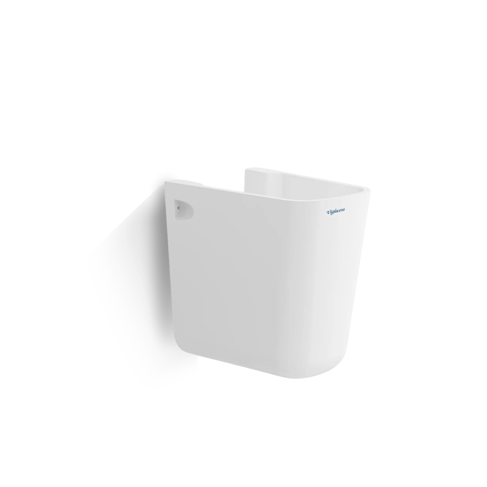
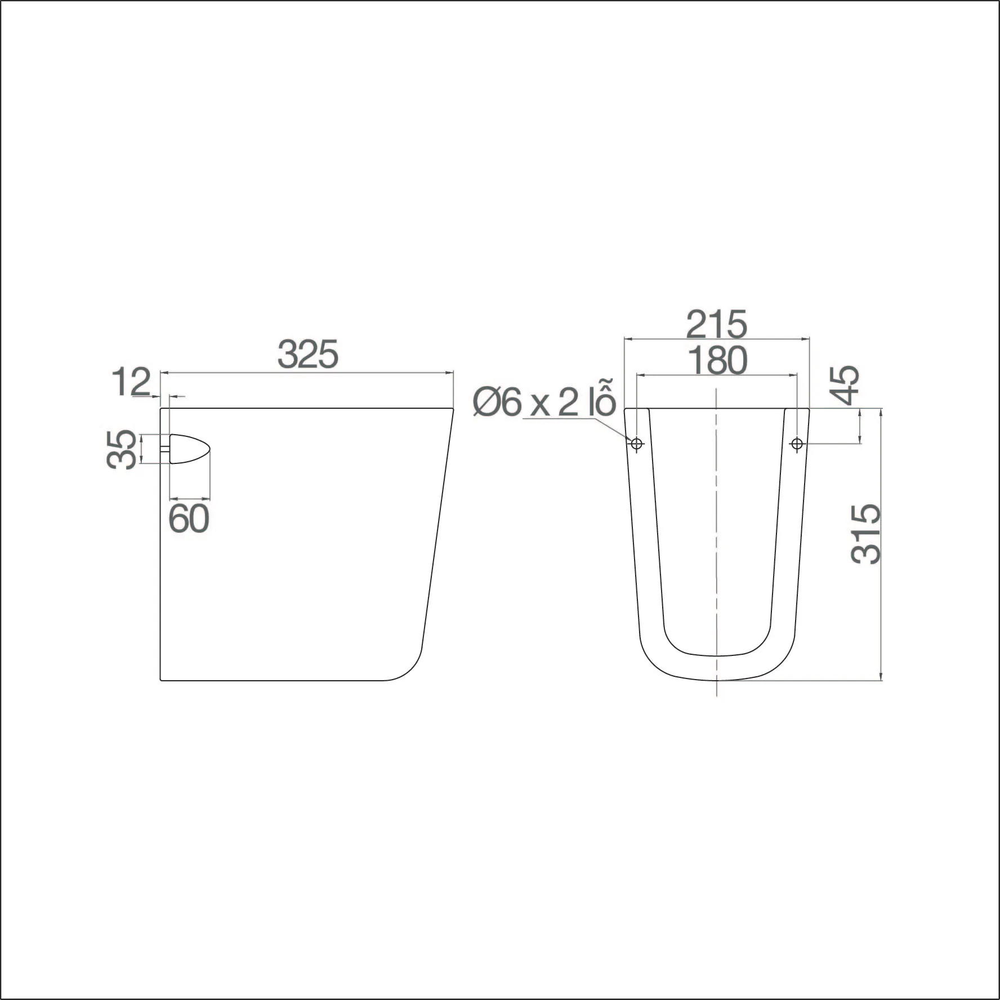

Chân chậu V23 Viglacera được sản xuất trên dây chuyền hiện đại, đáp ứng các tiêu chuẩn kỹ thuật khắt khe, mang lại sự chắc chắn và độ bền lâu dài. Khi kết hợp đồng bộ với chậu rửa Viglacera V23, sản phẩm giúp không gian phòng tắm thêm gọn gàng, hiện đại và sang trọng. Đặc điểm nổi bật của chân chậu Viglacera V23: Đồng bộ hoàn hảo: Thiết kế vừa vặn, tạo tổng thể hài hòa, tinh tế. Gọn nhẹ, tiết kiệm diện tích: Kiểu dáng đơn giản, dễ lắp đặt treo tường, tối ưu không gian phòng tắm. Kích thước hợp lý: Đáp ứng đầy đủ tiêu chuẩn kỹ thuật, mang lại sự tiện lợi khi sử dụng. Che gọn ống thoát nước: Giúp giấu kín đường ống siphon, đảm bảo tính thẩm mỹ cho phòng tắm. Chất liệu sứ cao cấp: Bền chắc, chịu lực tốt, dễ vệ sinh, an toàn cho sức khỏe người dùng. Ứng dụng linh hoạt: Phù hợp với phòng tắm gia đình, khách sạn, văn phòng và nhiều công trình hiện đại. Với thiết kế gọn gàng, chắc chắn và đồng bộ thẩm mỹ, chân chậu V23 Viglacera là lựa chọn hoàn hảo để hoàn thiện không gian phòng tắm tiện nghi và sang trọng. Khám phá thêm các mẫu chậu rửa và phụ kiện Viglacera khác để lựa chọn sản phẩm phù hợp nhất cho gia đình bạn. HƯỚNG DẪN SỬ DỤNG VÀ BẢO QUẢN Vệ sinh thường xuyên, nhẹ nhàng bằng chất tẩy rửa trung tính, khăn mềm và nước sạch. KHÔNG SỬ DỤNG: Dung dịch tẩy rửa có tính kiềm mạnh (pH ≥ 11) hoặc axit mạnh (pH ≤ 2) Chất tẩy rửa công nghiệp, hóa chất chứa Clo (Calcium hypochlorite) Bàn chải, chổi cọ, bọt biển cứng chà lên bề mặt sứ Nước sôi đổ trực tiếp lên sản phẩm Sử dụng nhẹ nhàng, không tác động mạnh, tránh va đập. Đảm bảo sản phẩm không nứt vỡ trước khi lắp đặt để tránh rò rỉ trong quá trình sử dụng. THÔNG TIN BẢO HÀNH Nội dung bảo hành Thời gian bảo hành Bảo hành chính hãng Thân sứ 10 năm (Từ ngày mua hàng) Hotline: 1800 58 58 05 (Miễn phí cuộc gọi) Phụ kiện sứ 24 tháng (Từ ngày mua hàng) Linh kiện điện tử 12 tháng (Từ ngày mua hàng) Vật tư tiêu hao (Pin,...) 3 tháng (Từ ngày mua hàng) *Quét mã QR trên sản phẩm để theo dõi thông tin thời gian bảo hành cụ thể. Xem thêm: Chậu chân treo tường V23 HƯỚNG DẪN SỬ DỤNG VÀ BẢO QUẢN Vệ sinh thường xuyên, nhẹ nhàng bằng chất tẩy rửa trung tính, khăn mềm và nước sạch. KHÔNG SỬ DỤNG: Dung dịch tẩy rửa có tính kiềm mạnh (pH ≥ 11) hoặc axit mạnh (pH ≤ 2) Chất tẩy rửa công nghiệp, hóa chất chứa Clo (Calcium hypochlorite) Bàn chải, chổi cọ, bọt biển cứng chà lên bề mặt sứ Nước sôi đổ trực tiếp lên sản phẩm Sử dụng nhẹ nhàng, không tác động mạnh, tránh va đập. Đảm bảo sản phẩm không nứt vỡ trước khi lắp đặt để tránh rò rỉ trong quá trình sử dụng. THÔNG TIN BẢO HÀNH Nội dung bảo hành Thời gian bảo hành Bảo hành chính hãng Thân sứ 10 năm (Từ ngày mua hàng) Hotline: 1800 58 58 05 (Miễn phí cuộc gọi) Phụ kiện sứ 24 tháng (Từ ngày mua hàng) Linh kiện điện tử 12 tháng (Từ ngày mua hàng) Vật tư tiêu hao (Pin,...) 3 tháng (Từ ngày mua hàng) *Quét mã QR trên sản phẩm để theo dõi thông tin thời gian bảo hành cụ thể. Xem thêm: Chậu chân treo tường V23
Chậu chân V23
Chân chậu thương hiệu Viglacera.
Đã cập nhật danh sách yêu thích.
DANH MỤC: Chân chậu
MÃ SẢN PHẨM: V23
LOẠI SẢN PHẨM: Chân chậu
THƯƠNG HIỆU: Viglacera
GIÁ: 650.000₫
Chân chậu V23 Viglacera được sản xuất trên dây chuyền hiện đại, đáp ứng các tiêu chuẩn kỹ thuật khắt khe, mang lại sự chắc chắn và độ bền lâu dài. Khi kết hợp đồng bộ với chậu rửa Viglacera V23, sản phẩm giúp không gian phòng tắm thêm gọn gàng, hiện đại và sang trọng. Đặc điểm nổi bật của chân chậu Viglacera V23: Đồng bộ hoàn hảo: Thiết kế vừa vặn, tạo tổng thể hài hòa, tinh tế. Gọn nhẹ, tiết kiệm diện tích: Kiểu dáng đơn giản, dễ lắp đặt treo tường, tối ưu không gian phòng tắm. Kích thước hợp lý: Đáp ứng đầy đủ tiêu chuẩn kỹ thuật, mang lại sự tiện lợi khi sử dụng. Che gọn ống thoát nước: Giúp giấu kín đường ống siphon, đảm bảo tính thẩm mỹ cho phòng tắm. Chất liệu sứ cao cấp: Bền chắc, chịu lực tốt, dễ vệ sinh, an toàn cho sức khỏe người dùng. Ứng dụng linh hoạt: Phù hợp với phòng tắm gia đình, khách sạn, văn phòng và nhiều công trình hiện đại. Với thiết kế gọn gàng, chắc chắn và đồng bộ thẩm mỹ, chân chậu V23 Viglacera là lựa chọn hoàn hảo để hoàn thiện không gian phòng tắm tiện nghi và sang trọng. Khám phá thêm các mẫu chậu rửa và phụ kiện Viglacera khác để lựa chọn sản phẩm phù hợp nhất cho gia đình bạn. HƯỚNG DẪN SỬ DỤNG VÀ BẢO QUẢN Vệ sinh thường xuyên, nhẹ nhàng bằng chất tẩy rửa trung tính, khăn mềm và nước sạch. KHÔNG SỬ DỤNG: Dung dịch tẩy rửa có tính kiềm mạnh (pH ≥ 11) hoặc axit mạnh (pH ≤ 2) Chất tẩy rửa công nghiệp, hóa chất chứa Clo (Calcium hypochlorite) Bàn chải, chổi cọ, bọt biển cứng chà lên bề mặt sứ Nước sôi đổ trực tiếp lên sản phẩm Sử dụng nhẹ nhàng, không tác động mạnh, tránh va đập. Đảm bảo sản phẩm không nứt vỡ trước khi lắp đặt để tránh rò rỉ trong quá trình sử dụng. THÔNG TIN BẢO HÀNH Nội dung bảo hành Thời gian bảo hành Bảo hành chính hãng Thân sứ 10 năm (Từ ngày mua hàng) Hotline: 1800 58 58 05 (Miễn phí cuộc gọi) Phụ kiện sứ 24 tháng (Từ ngày mua hàng) Linh kiện điện tử 12 tháng (Từ ngày mua hàng) Vật tư tiêu hao (Pin,...) 3 tháng (Từ ngày mua hàng) *Quét mã QR trên sản phẩm để theo dõi thông tin thời gian bảo hành cụ thể. Xem thêm: Chậu chân treo tường V23 HƯỚNG DẪN SỬ DỤNG VÀ BẢO QUẢN Vệ sinh thường xuyên, nhẹ nhàng bằng chất tẩy rửa trung tính, khăn mềm và nước sạch. KHÔNG SỬ DỤNG: Dung dịch tẩy rửa có tính kiềm mạnh (pH ≥ 11) hoặc axit mạnh (pH ≤ 2) Chất tẩy rửa công nghiệp, hóa chất chứa Clo (Calcium hypochlorite) Bàn chải, chổi cọ, bọt biển cứng chà lên bề mặt sứ Nước sôi đổ trực tiếp lên sản phẩm Sử dụng nhẹ nhàng, không tác động mạnh, tránh va đập. Đảm bảo sản phẩm không nứt vỡ trước khi lắp đặt để tránh rò rỉ trong quá trình sử dụng. THÔNG TIN BẢO HÀNH Nội dung bảo hành Thời gian bảo hành Bảo hành chính hãng Thân sứ 10 năm (Từ ngày mua hàng) Hotline: 1800 58 58 05 (Miễn phí cuộc gọi) Phụ kiện sứ 24 tháng (Từ ngày mua hàng) Linh kiện điện tử 12 tháng (Từ ngày mua hàng) Vật tư tiêu hao (Pin,...) 3 tháng (Từ ngày mua hàng) *Quét mã QR trên sản phẩm để theo dõi thông tin thời gian bảo hành cụ thể. Xem thêm: Chậu chân treo tường V23
DANH MỤC: Chân chậu
MÃ SẢN PHẨM: V23
LOẠI SẢN PHẨM: Chân chậu
THƯƠNG HIỆU: Viglacera
GIÁ: 650.000₫